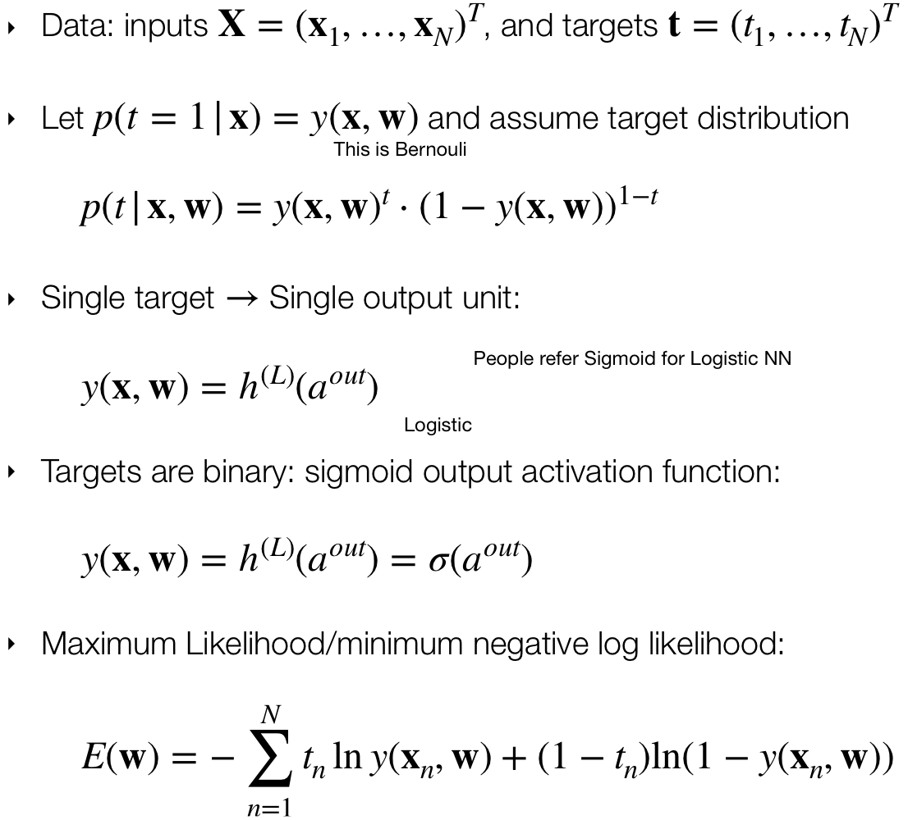
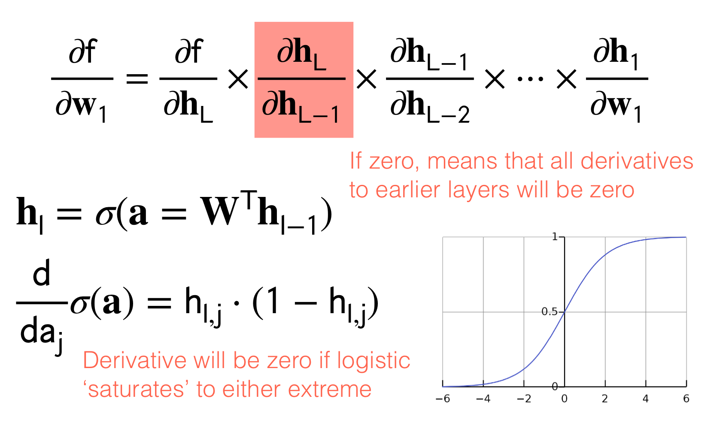

The only difference between the normal perceptron and the logistic regression its how we compute the activation function the f(x)
- When we use Logistic REgression we get an answer in terms of probabilities so from 0 to 1, the perceptron did not have this property. It will just give us a \(+1\) or \(-1\)
The perceptron cannot solve the XOR problem also the logistic regression. To get around this problem, we stack perceptron like in a layer fashion model. This is called Multilayer Perceptron
But because people start to use the logistic regression instead of the actual hardcore perceptron output (so \(+1\) or \(-1\)) then we now call it. Multilayer Logistic Regression
So instead of that we are gonna have different activation functions
We also talked about QDA this is a non linear model classifier
We call the computation from going to the input to the ouput as forward propagation
The number of parameters for Logistic Regression is \(D+1\) vs Gaussian Classifier contains \(D^2\). all these computation.
So when you get scared about the number of layers then you just remember the previous layers they were just a type of basis funtions and the last layer is a linear model like so:
The difference between linear models with adaptive basis is that the Neural Networks learn the basis functions.
With Neural Networks we do not have to have heuristics for this basis functions but they learn by themselves.
We see that to separate our data from above we can use one hidden layer with tree units:
Recall from the previous lecture that with our Logistic Regression we neede to have some radial functions, the difference here its that we can now gotten learnt this basis functions with our Neural Network.
NN start with low level features and keeps increasing until it calculates the features it find relevant to take a decision.
- Recurrent Neural Networks: good for sentences analysis because the new hidden layer depend on the ouput of the previous hidden layers before.
- Convolution Neural Networks: you can recognize objects.
It is spacial invariant because you are moving your kernel along all dimensions.
1 Universal Approximators
We can find a number M and for the weights \(\textbf{w}^(2)\) so the weights in the second layer. Here \(M\) represents the units aka the circles in a layer. See the green highlighted circles below
If we want the error to be to zero then we want the value of \(M\) to be larger and larger. This is because we fixed our NN to have only 2 layers so the only thing that can grow its the widht so \(M\) so the number of neurons (units). So with M its hard if you compute plenty of them because then you need a lot of GPUs.
The summary of the Universal Approximator is that width \(M\) is the one that matter. It is just one hidden layer and if you can make it big enough, so if you can increase \(M\) enough then you can fit approximate almost anything
Here \(\textbf{w}^2 \in \mathbb{R}^{Mx1}\) because if we want to compute only one single value at the end of the NN we need the dimensions of the vector to align see figure above
2 Deep Neural Nets and Shallow Neural Nets
Here we are saying that if we want to conserve the error lower as much as a Deep Neural Net, so that we can have a Shallow Neural Net then we need to increase the number of \(M\) or number of weights. But by doing so this scales exponentially.
To growth complexity you have to increase the width, but instead of this you can do it in the depth. As we will see in the slide below, Depth gives you more complexity so its preferable to increase depth instead of width
- Width: \(M\) number of weights
If you want the error small then increase this number. However if you go this route the number \(M(\varepsilon)\) grows exponentially - Depth: \(l\) number of hidden layers.
Here it gives you more complexity, so its recommended, End result have deeper NNs.
The point of the image above is to show that with the same model (3 hidden units and 1 linesr ouput unit) which is the Neural Network we can approximate these 4 functions.
3 Expressive power ReLU networks
4 Network Training: Regression
Remember computing the Maximum Likelihood is the same as the minimum of the negative log likelihood, that is why there is a minus on front the \(\ln p(\textbf{t}|\textbf{W},\textbf{w})\)
5 Network Training
5.1 Regression: Network Training
5.2 Binary Classification: Network Training

5.3 Classification with K classes: Network Training
For further explanation in class distribution take a look at here
6 Losses overview
7 Training Neural Networks
Because we cannot find easily the mathematically solutions for training the NN, we use Gradient Descent
Result of forward propagation. Depends on all the NN weights —> Lots of local minima! It results in lots of local minima because we are updating simultaneously all the weights
That means that the loss function depends on all the parameters (all the weights in the NN) thus we have a lot of parameters to update.
Here for instance we have 2 local minima and one unique global minima
8 Neural Network Optimization Surface
- Despite these crazy optimization landscapes, gradient descent works amazingly well!
- For large networks, many of the critical points are saddle-points, not local minima.
As our dimensionality increases, the saddle points will grow with respect to the minimum, but the minimam will also grow
Because of all these variation we want to always report uncertainties on performance. This uncertainties comes from randomness in initialization and Stochastic Gradient Descend SGD.
The idea is to report error by averaging over all these models in the same column.
Now, we talked about making the learning rate higher at start and then slowly decreased it at training. This what we talk in the next topic:
9 Cyclic Learning Rates
It may seem crazy making the learning rate cyclic, so increase it again then lower it then increase it again. But this results in exploration so that you don’t end up in a local minima.
With cyclic learning rate we could explore three local minima
Note: We used to compute Logistic Regression with Gradient Descent, here its the same with NN. More mathematically we cannot compute a closed form of the weights hence we use GD.
10 Chain Rule through Layers
- Forward Propagation: is to evaluate the full network from inputs to ouputs
- Backward Propagation: is to send error signals back though the network
Remember \(h_l = \sigma(a)\). Meaning the ouput of the sigmoid is the new \(h_l\). With this in mind because we want to tune the parameters aka weights we send the error back to the inputs, this as we said before it’s called backpropagation.
Now, because we want to send the error back so that we can reduce it, we would compute the derivative. Here is the same, we will compute the derivatives and because the NN its like a chain of multiplication due to the chain rule, here we can make use of optimization techniques. That is:
- Backpropagation is simply the chain rule implemented with cached values of intermediate computations.
- We have the tradeoff between computational complexity for memory. In other words we have saved in computation complexity (carry out many derivatives) because we have cached these \(h_{l,j}\) which is exactly the result of computing the derivatives to reduce the error and thus carry out backpropagation.
In summary when we do backprogation due to the symmetry of the hidden layers, we can save in computing all the times the derivatives and instead trade it for memory to cache these \(h_{l,j}\)
The above is what distinguishes the chain rule from backpropagation. Backpropagation uses the notion of reusing information.
11 Downside: Numerical Issues
Two things can go wrong with this approach:
- Exploding gradients:
- Problem: The multiplication of an intermediate derivate value could be large so then wehn you continue multiplying with the rest of the layers then it will become a huge number.
- Solution: can usually be handled by ‘clipping’ values or regularizing weights to be small.
- Problem: The multiplication of an intermediate derivate value could be large so then wehn you continue multiplying with the rest of the layers then it will become a huge number.
- Vanishing gradients:
- Problem: When the ouput of the sigmoid is close to \(1\) or \(0\) we would have that the derivative \(h_{l,j}*(1-h_{l,j})\) where recall that \(\textbf{h}_l=\sigma(\textbf{a})\) meaning when sigmoid evaluates to this extremes then the derivative would become zero. In other words, if zero because \(h_{l,j}\) can be \(1\) or \(0\) then all derivatives to earlier layers will be zero. See figure below:
 The figure above then means that if one derivative becomes zero then learning cannot happen.- Possible Solution1: there is no proper solution because if you say you want to clip this derivative not to yield \(1\) or \(0\) then your next question its to how much close to these extremes I should set the derivative. (In practice however the sigmoid will not evaluate to perfect \(1\) or \(0\) but it will be small enough to make the multiplication of the other derivatives in the chain rule significantly deleterious to proceed training).
- Possible Solution2: In the neural networks we add a line that connect the current output layer \(h_l\) with the previous outout layer \(h_{l-1}\)
12 Scalar Neural Network
Recall that when we do linear regression we do not need to have an activation function \(f\) like softmax or logistic, we just have the identity which means \(f(w_2 \cdot h)\) becomes just \(w_2 \cdot h\).
12.1 Computing the Error loss on \(w_1\)
If we would compute the error but now with activation function \(a\) equals Relu
This could be a bad idea because if \(w_1 \cdot x\) is lower than \(0\) then the whole error loss would be evaluated to zero and thus cannot train the network because you keep getting derivatives of zero. This is called the Dead Relu problem. In practice people initialize the input to a positive value. Also people use Leaky Relu depicted below
13 Vector Neural Network
We will have a scalar input and scalar ouput but with hidden layers as vectors.
- Derivative is a row vector: \[ \begin{align} \frac{\partial f}{\partial \textbf{x}} = \left[\frac{\partial f}{\partial x_1},...,\frac{\partial f}{\partial x_D} \right] \end{align} \]
- Gradient is the transpose of the Derivative vector: \[ \begin{align} \nabla_{w_1}f = \left[\frac{\partial f}{\partial \textbf{w}_1} \right]^T \end{align} \] We do the transpose because we are tryng to get the same shape as our paramter \(\textbf{W}\). So in this case if \(W\) would have been a two-row vector then with the transpose we ensure that.
14 Computations in 2D
A rule of thumb is:
- Output linear operator Rows
- The model parameters as Columns
15 Two Modes: Forward and Reverse
In Pytorch, you can compute the forward or reverse computation we saw before. The only difference is which direction you cache from.
- Forward mode: you start with the partial derivatives at the beginning of the NN. For instance in the image below, from dh1/dw1 (the first layer) to df/dh2 (the last layer).
- Better when ouput dim >> input dim
- Reverse mode: you start from the ouput to the input.
- Better when ouput dim << input dim
This is telling us that i.e to be more efficient in an image classifier then you would prefer the Reverse mode because you have that your input would be a huge array of numbers whereas your ouput would be a few classes. So here it applies: dim ouput << dim input.
The reason for ie in forward mode is that you would compute small derivatives because your input is small so then you delay to compute much more multiplication to the end
Another examples why is more efficient, say your outputs >> inputs, then if you start by computing the ouput derivatives then you are going to accumulate and carry all those dimensions due to the large ouput derivatives. Then you carry all these computations to the input layer that has fewer computations but you already have a hug baggage and its not efficient. Summary: you want to do the large multiplication until the end so that you do not carry unnecessary derivation.